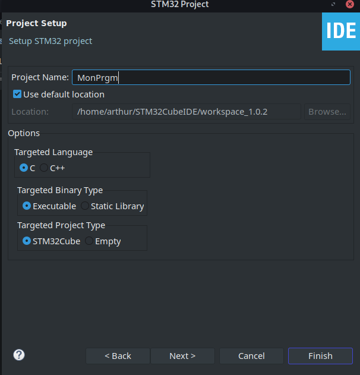

Creation d’un programme de test pour y mettre des fonctions de sécurités¶
Pour faciliter l’implémentation des fonctions de sécurités, nous avons créer un programme simple utilisant uniquement des fonctions faite par STM. Le programme que nous avons créer inverse l’état de 3 LEDs à des intervalent différents, et tant que l’utiliseur appuit sur le bouton bleu (USER) de la carte les LEDs restes éteintes. Le programme Ecrit aussi une clés secrette sur le port serie. Si nous envoyons la clés secret sur la liaison série c’est pour eviter que le compilateur optimise le code en la supprimant, ce qui serrait possible si cette variable n’est pas utlisé.
Installation du logiciel¶
Pour ce programme, nous utilisons CubeIDEv1.0.2 qui est l’IDE de STMicroelectronic permetant une configuration facile des horloges, des entrées sortie … du micro contrôleur. Vous pouvez le télécharger pour votres platforme à cette addresse : https://www.st.com/en/development-tools/stm32cubeide.html.
Une fois le fichier téléchargé vous devez l’extraire. Et lancer le script d’installation avec les droit d’administrateur et suivez les consignes.
unzip en.en.st-stm32cubeide_1.1.0_4551_20191014_1140_amd64.sh.zip
sudo sh ./en.en.st-stm32cubeide_1.1.0_4551_20191014_1140_amd64.sh/st-stm32cubeide_1.1.0_4551_20191014_1140_amd64.sh
Configuration du projet¶
Dans le logiciel vous devez commencer par créer un nouveau projet. File -> New -> STM32 PRoject

Dans la fenêtre qui c’est ouverte, aller sur l’onglet « board selector » et dans le champ de recherche « B-L072Z-LRWAN1 ».

Sélectionez la carte puis cliquez sur « Next », entrer le nom de votre projet puis cliquez sur « Finish ».
Programmation¶
Pour commencer nous allons paramétrer les I/O, à savoir 3 LEDS et un Bouton Poussoir.
Dans l’orborecence du projet (Fenêtre à gauche) séléctionner le fichier avec l’extension .ioc c’est un fichier qui va vous permettre de facilement configurer le les I/O.
Pour configurer les I/O cliquer sur leurs identifiants, sur la figure de droite. Sélectionner GPIO_Output pour les LEDs et GPIO_Input pour le bouton. En se réferant à la documentations les I/O à configurer sont les suivantes :
PB5 = Led_Vert
PB6 = Led_Bleu
PB7 = Led_Rouge
PB2 = Bouton Pression
Pour faciliter la programmation avec des nom personnalisé pour ces I/O, vous pouvez définir des label dans la colonne « User label » du tableau « GPIO ».
Vous devrier avoir une configuration comparable à celle de la figure suivante.
Maintenant nous allons configurer L’uart1, dans la catégorie « Connectivity » cliquer sur « USART1 » metter le en mode « Synchronous » et réglez le Baud Rate à 115200.

Pour génerer le code vous devez cliquer sur l’icon « Device Configuration Tool Code Generation » dans la barre d’outil en haut de l’écran.
Dans l’arborescence du projet déplacez-vous jusqu’au fichier main.c

Dans les variable privé ~ligne 52 vous allez ajouter un buffer et notres clés secrette.
uint8_t buffer[2];
char SECRET_KEY[16] = {0x2B, 0x7E, 0x15, 0x16, 0x28, 0xAE, 0xD2, 0xA6, 0xAB, 0xF7, 0x15, 0x88, 0x09, 0xCF, 0x3F, 0x3C};
Dans la partie « USER CODE BEGIN 2 » ~ ligne 156 nous allons initialiser nos LEDs dans l’état éteint, puis envoyer notre clés sur la liaison série.
HAL_GPIO_WritePin(LED_Blue_GPIO_Port, LED_Blue_Pin, 0);
HAL_GPIO_WritePin(LED_Green_GPIO_Port, LED_Green_Pin, 0);
HAL_GPIO_WritePin(LED_Red_GPIO_Port, LED_Red_Pin, 0);
for (int i = 0; i < 16; i++ ){
buffer[0] = SECRET_KEY[i];
buffer[1] = '\n';
HAL_USART_Transmit(&husart1, buffer, sizeof(buffer), 1000);
}
Dans la boucle « while(1) » ~ligne 187, de la fonction « main » du programme vous allez ecrire le programme faisant clignoter les LEDs gère le bouton, tout en envoyant la clés sur la liaison série.
for (int i = 0; i < 16; i++ ){
buffer[0] = SECRET_KEY[i];
HAL_USART_Transmit(&husart1, buffer, sizeof(buffer), 1000);
}
buffer[0] = '\n';
HAL_USART_Transmit(&husart1, buffer, sizeof(buffer), 1000);
HAL_Delay(1000);
if (HAL_GPIO_ReadPin(BP_USER_GPIO_Port, BP_USER_Pin) == 0){
HAL_GPIO_WritePin(LED_Blue_GPIO_Port, LED_Blue_Pin, 0);
HAL_GPIO_WritePin(LED_Green_GPIO_Port, LED_Green_Pin, 0);
HAL_GPIO_WritePin(LED_Red_GPIO_Port, LED_Red_Pin, 0);
}
else{
//HAL_Delay(1000);
HAL_GPIO_TogglePin(LED_Red_GPIO_Port, LED_Red_Pin);
HAL_Delay(500);
HAL_GPIO_TogglePin(LED_Blue_GPIO_Port, LED_Blue_Pin);
HAL_Delay(250);
HAL_GPIO_TogglePin(LED_Green_GPIO_Port, LED_Green_Pin);
}
Lancer le projet¶
Pour écrire le code sur la carte, vous devez d’abords la brancher à votre ordinateur. Puis lancer le débuggage, pour ça cliquez sur l’icon en forme de virus vert dans la barre d’outils au dessus du code.